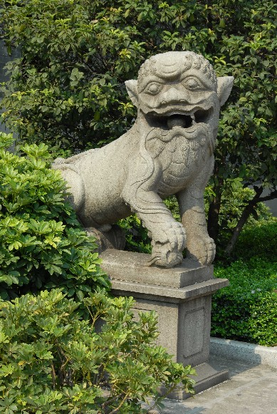

狮子在民间被认为是百兽之王，是权力与威严的象征。狮子并不是我国特产，它盛产于南亚，在东汉年间传入我国。历代帝王都将这些外来佛教中的狮文化涂上我国传统的民俗文化色彩，也将狮子作为尊贵、威武、祥瑞的神兽，历代相沿，形成了许多崇拜狮子的风俗。最为常见的是，古人常用石狮、石刻狮纹以“镇门”、“镇墓”和“护佛”，用作辟邪。
在陈家祠大门前，屹立着一对活泼可爱、神态祥和、极具人情味的石狮子。东边的雄狮脚踩石球，傲视远方，象征着权力；西边的雌狮蹄扶小狮，象征着子孙兴旺、家族繁荣。石狮子口含光滑的石圆球，此球比狮子的牙缝大，能在狮子的口腔里自如地滚动却不会滚出狮口，这是石雕艺人运用镂雕技法雕琢而成的。另外，书院内还有多处石雕狮子，如石梁架上负重的狮子、月台望柱头上活泼可爱的小狮子、檐廊栏板“太师少师”图等。
「位于：正门前两侧」